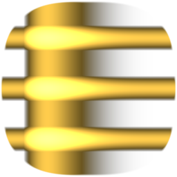

µEforth
🙜
Brad Nelson
🙜
January 23, 2021
Introduction
🙜
• EForth in C has too much C
• Minimize C code
• But avoid redundancy
• Inspired by ColorForth
Platform Support
🙜
• Linux
• Windows
• ESP32 Arduino
• Web (WIP)
Platform Packaging
🙜
• Linux -- includes
• Windows -- includes
• ESP32 -- concat script
• Web (WIP) -- regex script
Core Words
0= 0< + U/MOD */MOD AND OR XOR
DUP SWAP OVER DROP @ L@ C@ ! L! C!
SP@ SP! RP@ RP! >R R> R@ : ; EXIT
EXECUTE BRANCH 0BRANCH DONEXT DOLIT
ALITERAL CELL DOES> IMMEDIATE 'SYS
#define OPCODE_LIST \
X("0=", ZEQUAL, tos = !tos ? -1 : 0) \
X("0<", ZLESS, tos = (tos|0) < 0 ? -1 : 0) \
X("+", PLUS, tos += *sp--) \
#define OPCODE_LIST \
X("0=", ZEQUAL, tos = !tos ? -1 : 0) \
X("0<", ZLESS, tos = (tos|0) < 0 ? -1 : 0) \
X("+", PLUS, tos += *sp--) \
X("U/MOD", USMOD, w = *sp; *sp = (ucell_t) w % (ucell_t) tos; \
tos = (ucell_t) w / (ucell_t) tos) \
X("*/MOD", SSMOD, SSMOD_FUNC) \
X("AND", AND, tos &= *sp--) \
X("OR", OR, tos |= *sp--) \
X("XOR", XOR, tos ^= *sp--) \
X("DUP", DUP, DUP) \
X("SWAP", SWAP, w = tos; tos = *sp; *sp = w) \
X("OVER", OVER, DUP; tos = sp[-1]) \
X("DROP", DROP, DROP) \
X("@", AT, tos = *(cell_t *) tos) \
X("L@", LAT, tos = *(int32_t *) tos) \
X("C@", CAT, tos = *(uint8_t *) tos) \
X("!", STORE, *(cell_t *) tos = *sp--; DROP) \
X("L!", LSTORE, *(int32_t *) tos = *sp--; DROP) \
X("C!", CSTORE, *(uint8_t *) tos = *sp--; DROP) \
X("SP@", SPAT, DUP; tos = (cell_t) sp) \
X("SP!", SPSTORE, sp = (cell_t *) tos; DROP) \
X("RP@", RPAT, DUP; tos = (cell_t) rp) \
X("RP!", RPSTORE, rp = (cell_t *) tos; DROP) \
X(">R", TOR, *++rp = tos; DROP) \
X("R>", FROMR, DUP; tos = *rp; --rp) \
X("R@", RAT, DUP; tos = *rp) \
X("EXECUTE", EXECUTE, w = tos; DROP; JMPW) \
X("BRANCH", BRANCH, ip = (cell_t *) *ip) \
X("0BRANCH", ZBRANCH, if (!tos) ip = (cell_t *) *ip; else ++ip; DROP) \
X("DONEXT", DONEXT, *rp = *rp - 1; \
if (~*rp) ip = (cell_t *) *ip; else (--rp, ++ip)) \
X("DOLIT", DOLIT, DUP; tos = *ip++) \
X("ALITERAL", ALITERAL, COMMA(g_sys.DOLIT_XT); COMMA(tos); DROP) \
X("CELL", CELL, DUP; tos = sizeof(cell_t)) \
X("FIND", FIND, tos = find((const char *) *sp, tos); --sp) \
X("PARSE", PARSE, DUP; tos = parse(tos, sp)) \
X("S>NUMBER?", CONVERT, tos = convert((const char *) *sp, tos, sp); \
if (!tos) --sp) \
X("CREATE", CREATE, DUP; DUP; tos = parse(32, sp); \
create((const char *) *sp, tos, 0, ADDR_DOCREATE); \
COMMA(0); --sp; DROP) \
X("DOES>", DOES, DOES(ip); ip = (cell_t *) *rp; --rp) \
X("IMMEDIATE", IMMEDIATE, IMMEDIATE()) \
X("'SYS", SYS, DUP; tos = (cell_t) &g_sys) \
X("YIELD", YIELD, PARK; return) \
X(":", COLON, DUP; DUP; tos = parse(32, sp); \
create((const char *) *sp, tos, 0, ADDR_DOCOLON); \
g_sys.state = -1; --sp; DROP) \
X("EVALUATE1", EVALUATE1, DUP; sp = evaluate1(sp); w = *sp--; DROP; \
if (w) JMPW) \
X("EXIT", EXIT, ip = (cell_t *) *rp--) \
X(";", SEMICOLON, COMMA(g_sys.DOEXIT_XT); g_sys.state = 0) \
#define JMPW goto **(void **) w
#define NEXT w = *ip++; JMPW
#define ADDR_DOCOLON && OP_DOCOLON
#define ADDR_DOCREATE && OP_DOCREATE
#define ADDR_DODOES && OP_DODOES
static void ueforth_run(void) {
if (!g_sys.ip) {
#define X(name, op, code) create(name, sizeof(name) - 1, name[0] == ';', && OP_ ## op);
PLATFORM_OPCODE_LIST
OPCODE_LIST
#undef X
return;
}
register cell_t *ip = g_sys.ip, *rp = g_sys.rp, *sp = g_sys.sp, tos, w;
DROP; NEXT;
#define X(name, op, code) OP_ ## op: { code; } NEXT;
PLATFORM_OPCODE_LIST
OPCODE_LIST
#undef X
OP_DOCOLON: ++rp; *rp = (cell_t) ip; ip = (cell_t *) (w + sizeof(cell_t)); NEXT;
OP_DOCREATE: DUP; tos = w + sizeof(cell_t) * 2; NEXT;
OP_DODOES: DUP; tos = w + sizeof(cell_t) * 2;
++rp; *rp = (cell_t) ip; ip = (cell_t *) *(cell_t *) (w + sizeof(cell_t)); NEXT;
}
int main(int argc, char *argv[]) {
void *heap = mmap(0, HEAP_SIZE, PROT_EXEC |
PROT_READ | PROT_WRITE, MAP_PRIVATE | MAP_ANONYMOUS, -1, 0);
ueforth(argc, argv, heap, boot, sizeof(boot));
return 1;
}
const char boot[] =
": ( 41 parse drop drop ; immediate\n"
"\n"
"( Useful Basic Compound Words )\n"
": 2drop ( n n -- ) drop drop ;\n"
": 2dup ( a b -- a b a b ) over over ;\n"
": nip ( a b -- b ) swap drop ;\n"
": rdrop ( r: n n -- ) r> r> drop >r ;\n"
": */ ( n n n -- n ) */mod nip ;\n"
": * ( n n -- n ) 1 */ ;\n"
": /mod ( n n -- n n ) 1 swap */mod ;\n"
": / ( n n -- n ) /mod nip ;\n"
": mod ( n n -- n ) /mod drop ;\n"
": invert ( n -- ~n ) -1 xor ;\n"
": negate ( n -- -n ) invert 1 + ;\n"
": - ( n n -- n ) negate + ;\n"
": rot ( a b c -- c a b ) >r swap r> swap ;\n"
": -rot ( a b c -- b c a ) swap >r swap r> ;\n"
": < ( a b -- a ( a b -- a>b ) swap - 0< ;\n"
": = ( a b -- a!=b ) - 0= ;\n"
": <> ( a b -- a!=b ) = 0= ;\n"
": bl 32 ; : nl 10 ;\n"
": 1+ 1 + ; : 1- 1 - ;\n"
": 2* 2 * ; : 2/ 2 / ;\n"
": 4* 4 * ; : 4/ 4 / ;\n"
": +! ( n a -- ) swap over @ + swap ! ;\n"
"\n"
Tricky
Words
PARSE ( ch -- a n )
S>NUMBER? ( a n -- n f | 0 )
CREATE ( "name" -- )
FIND ( a n -- xt | 0 )
EVALUATE1 ( -- )
static struct {
const char *tib;
cell_t ntib, tin, state, base;
cell_t *heap, *last, notfound;
int argc;
char **argv;
cell_t *ip, *sp, *rp; // Parked alternates
cell_t DOLIT_XT, DOEXIT_XT, YIELD_XT;
} g_sys;
PARSE ( ch -- a n )
🙜
'TIB ---> [...............]
| |
>IN #TIB
static char spacefilter(char ch) {
return ch == '\t' || ch == '\n' || ch == '\r' ? ' ' : ch;
}
static cell_t parse(cell_t sep, cell_t *ret) {
while (g_sys.tin < g_sys.ntib &&
spacefilter(g_sys.tib[g_sys.tin]) == sep) { ++g_sys.tin; }
*ret = (cell_t) (g_sys.tib + g_sys.tin);
while (g_sys.tin < g_sys.ntib &&
spacefilter(g_sys.tib[g_sys.tin]) != sep) { ++g_sys.tin; }
cell_t len = g_sys.tin - (*ret - (cell_t) g_sys.tib);
if (g_sys.tin < g_sys.ntib) { ++g_sys.tin; }
return len;
}
S>NUMBER? ( a n -- n f | 0 )
🙜
BASE
static cell_t convert(const char *pos, cell_t n, cell_t *ret) {
*ret = 0;
cell_t negate = 0;
cell_t base = g_sys.base;
if (!n) { return 0; }
if (pos[0] == '-') { negate = -1; ++pos; --n; }
if (pos[0] == '$') { base = 16; ++pos; --n; }
for (; n; --n) {
uintptr_t d = pos[0] - '0';
if (d > 9) {
d = LOWER(d) - 7;
if (d < 10) { return 0; }
}
if (d >= base) { return 0; }
*ret = *ret * base + d;
++pos;
}
if (negate) { *ret = -*ret; }
return -1;
}
CREATE ( "name" -- )
🙜
LAST
static void create(const char *name, cell_t length, cell_t flags, void *op) {
char *pos = (char *) g_sys.heap;
for (cell_t n = length; n; --n) { *pos++ = *name++; } // name
g_sys.heap += CELL_LEN(length);
*g_sys.heap++ = length; // length
*g_sys.heap++ = (cell_t) g_sys.last; // link
*g_sys.heap++ = flags; // flags
g_sys.last = g_sys.heap;
*g_sys.heap++ = (cell_t) op; // code
}
FIND ( a n -- xt | 0 )
🙜
'NOTFOUND
static cell_t find(const char *name, cell_t len) {
cell_t *pos = g_sys.last;
cell_t clen = CELL_LEN(len);
while (pos) {
if (len == pos[-3] &&
same(name, (const char *) &pos[-3 - clen], len) == 0) {
return (cell_t) pos;
}
pos = (cell_t *) pos[-2]; // Follow link
}
return 0;
}
EVALUATE1 ( -- )
🙜
STATE
static cell_t *evaluate1(cell_t *sp) {
cell_t call = 0;
cell_t name;
cell_t len = parse(' ', &name);
cell_t xt = find((const char *) name, len);
if (xt) {
if (g_sys.state && !(((cell_t *) xt)[-1] & 1)) { // bit 0 of flags is immediate
*g_sys.heap++ = xt;
} else {
call = xt;
}
} else {
cell_t n;
cell_t ok = convert((const char *) name, len, &n);
if (ok) {
if (g_sys.state) {
*g_sys.heap++ = g_sys.DOLIT_XT;
*g_sys.heap++ = n;
} else {
*++sp = n;
}
} else {
*++sp = name;
*++sp = len;
*++sp = -1;
call = g_sys.notfound;
}
}
*++sp = call;
return sp;
}
One other
"hard" word
*/MOD
# define SSMOD_FUNC \
dcell_t d = (dcell_t) *sp * (dcell_t) sp[-1]; \
--sp; cell_t a = (cell_t) (d < 0 ? ~(~d / tos) : d / tos); \
*sp = (cell_t) (d - ((dcell_t) a) * tos); tos = a
#endif
18 common/calling.h
148 common/core.h
25 common/interp.h
82 common/opcodes.h
23 posix/posix_main.c
296 total
224 common/boot.fs
What about
I/O?
Dynamic
Linking
#define PLATFORM_OPCODE_LIST \
X("DLSYM", DLSYM, tos = \
(cell_t) dlsym((void *) *sp, (void *) tos); --sp) \
CALLING_OPCODE_LIST \
#define PLATFORM_OPCODE_LIST \
X("GETPROCADDRESS", GETPROCADDRESS, \
tos = (cell_t) GetProcAddress((HMODULE) *sp, (LPCSTR) tos); --sp) \
X("LOADLIBRARYA", LOADLIBRARYA, \
tos = (cell_t) LoadLibraryA((LPCSTR) tos)) \
CALLING_OPCODE_LIST \
#define CALLING_OPCODE_LIST \
X("CALL0", OP_CALL0, tos = ((call_t) tos)()) \
X("CALL1", OP_CALL1, tos = ((call_t) tos)(*sp); --sp) \
X("CALL2", OP_CALL2, tos = ((call_t) tos)(sp[-1], *sp); sp -= 2) \
X("CALL3", OP_CALL3, tos = ((call_t) tos)(sp[-2], sp[-1], *sp); sp -= 3) \
#define CALLING_OPCODE_LIST \
X("CALL0", OP_CALL0, tos = ((call_t) tos)()) \
X("CALL1", OP_CALL1, tos = ((call_t) tos)(*sp); --sp) \
X("CALL2", OP_CALL2, tos = ((call_t) tos)(sp[-1], *sp); sp -= 2) \
X("CALL3", OP_CALL3, tos = ((call_t) tos)(sp[-2], sp[-1], *sp); sp -= 3) \
X("CALL4", OP_CALL4, tos = ((call_t) tos)(sp[-3], sp[-2], sp[-1], *sp); sp -= 4) \
X("CALL5", OP_CALL5, tos = ((call_t) tos)(sp[-4], sp[-3], sp[-2], sp[-1], *sp); sp -= 5) \
X("CALL6", OP_CALL6, tos = ((call_t) tos)(sp[-5], sp[-4], sp[-3], sp[-2], sp[-1], *sp); sp -= 6) \
X("CALL7", OP_CALL7, tos = ((call_t) tos)(sp[-6], sp[-5], sp[-4], sp[-3], sp[-2], sp[-1], *sp); sp -= 7) \
X("CALL8", OP_CALL8, tos = ((call_t) tos)(sp[-7], sp[-6], sp[-5], sp[-4], sp[-3], sp[-2], sp[-1], *sp); sp -= 8) \
X("CALL9", OP_CALL9, tos = ((call_t) tos)(sp[-8], sp[-7], sp[-6], sp[-5], sp[-4], sp[-3], sp[-2], sp[-1], *sp); sp -= 9) \
X("CALL10", OP_CALL10, tos = ((call_t) tos)(sp[-9], sp[-8], sp[-7], sp[-6], sp[-5], sp[-4], sp[-3], sp[-2], sp[-1], *sp); sp -= 10) \
#define PLATFORM_OPCODE_LIST \
/* Serial */ \
X("Serial.begin", SERIAL_BEGIN, Serial.begin(tos); DROP) \
X("Serial.end", SERIAL_END, Serial.end()) \
X("Serial.available", SERIAL_AVAILABLE, DUP; tos = Serial.available()) \
X("Serial.readBytes", SERIAL_READ_BYTES, tos = Serial.readBytes((uint8_t *) *sp, tos); --sp) \
X("Serial.write", SERIAL_WRITE, tos = Serial.write((const uint8_t *) *sp, tos); --sp) \
X("Serial.flush", SERIAL_FLUSH, Serial.flush()) \
Forth Features
🙜
• FOR..NEXT but also DO..LOOP
• TASK & Streams
• DEFER/IS & VALUE/TO
LINUX
🙜
• Start of X11 bindings
• Nice for testing
• Maybe use in place of gforth
WINDOWS
🙜
• Win32 console support w/ colors
• MessageBox
• Made an icon (using Forth Haiku)
@eforth.png

Windows Defender PAIN!
🙜
• Flagged as a virus / trojan
• This also has afflicted Win32Forth
• Switched to Visual Studio helped some
• Buy a signing certificate may help
• Big threat to language freedom
#define NEXT goto next
#define JMPW goto work
#define ADDR_DOCOLON ((void *) OP_DOCOLON)
#define ADDR_DOCREATE ((void *) OP_DOCREATE)
#define ADDR_DODOES ((void *) OP_DODOES)
enum {
OP_DOCOLON = 0,
OP_DOCREATE,
OP_DODOES,
#define X(name, op, code) OP_ ## op,
PLATFORM_OPCODE_LIST
OPCODE_LIST
#undef X
};
static void ueforth_run(void) {
if (!g_sys.ip) {
#define X(name, op, code) \
create(name, sizeof(name) - 1, name[0] == ';', (void *) OP_ ## op);
PLATFORM_OPCODE_LIST
OPCODE_LIST
#undef X
return;
}
register cell_t *ip = g_sys.ip, *rp = g_sys.rp, *sp = g_sys.sp, tos, w;
DROP;
for (;;) {
next:
w = *ip++;
work:
switch (*(cell_t *) w & 0xff) {
#define X(name, op, code) case OP_ ## op: { code; } NEXT;
PLATFORM_OPCODE_LIST
OPCODE_LIST
#undef X
case OP_DOCOLON: ++rp; *rp = (cell_t) ip; ip = (cell_t *) (w + sizeof(cell_t)); NEXT;
case OP_DOCREATE: DUP; tos = w + sizeof(cell_t) * 2; NEXT;
case OP_DODOES: DUP; tos = w + sizeof(cell_t) * 2;
++rp; *rp = (cell_t) ip;
ip = (cell_t *) *(cell_t *) (w + sizeof(cell_t)); NEXT;
}
}
}
WEB
🙜
• Passes asm.js validation -- my own :-(
• Doesn't run yet
• Maybe generating WebAssembly would be easier?
• Dr. Ting's has beat me to the punch :-)
case 13: // SWAP
w = (tos|0);
tos = (i32[sp>>2]|0);
i32[sp>>2] = w;
break;
case 14: // OVER
sp = (sp + 4) | 0;
i32[sp>>2] = (tos|0);
tos = (i32[(sp - 4)>>2]|0);
break;
ESP32
🙜
• Runs on ESP32 and ESP32-CAM!
• Lots of bindings:
• malloc, free, realloc
• Serial & Bluetooth Serial
• GPIO, I2C
• Files, SPIFFS, SD_MMC
• WiFi, mDNS, WebServer, Web UI
• Camera
What's Next?
🙜
• More ESP32 bindings
• Write a serial editor
eforth.appspot.com
⚘
QUESTIONS?